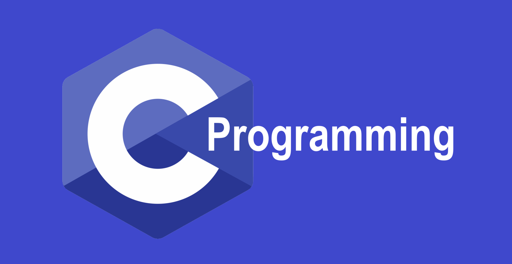

Актуальность Си
 Си является
достаточно актуальной, поскольку язык Си до сих пор широко используется в различных сферах разработки
программного обеспечения и является одним из самых популярных языков программирования в мире.
В 2023 году Си будет продолжать использоваться для разработки операционных систем, встроенных систем,
драйверов устройств, компиляторов и других системного уровня приложений. Язык Си также продолжит
использоваться в научных и инженерных вычислениях, включая моделирование и анализ данных, научные
вычисления и разработку систем и программного обеспечения для научных экспериментов.
Кроме того, Си является одним из основных языков, используемых для разработки приложений в области
кибербезопасности и сетевой безопасности. Этот язык обеспечивает высокую производительность и низкий
уровень накладных расходов, что делает его подходящим выбором для разработки критически важных систем.
Введение